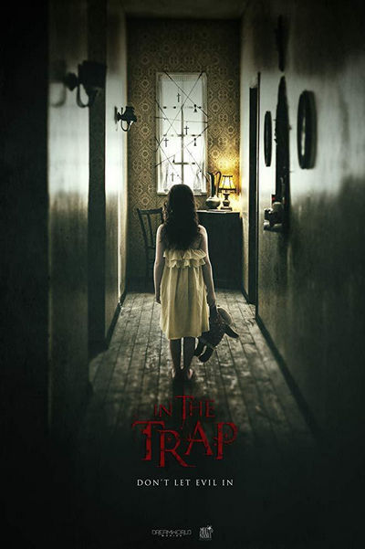

-
El efecto mariposa
El Efecto Mariposa – Genero: Thriller – Ciencia Ficcion Pais: USA Duración: 113 minutos Director: Eric Bress, J. Mackye Gruber Guion: Eric Bress, J. Mackye Gruber Reparto: Hermione Corfield, Dougray Scott, Connie Nielsen, Olwen Fouere, Jack Hickey, Ardalan Esmaili, Elie Bouakaze

El guardian invisible
El guardián invisible – Genero: Thriller – Suspenso Pais: España Duración: 97 minutos Director: Fernando González Molina Guion: Luiso Berdejo (Novela: Dolores Redondo) Reparto: Marta Etura, Elvira Mínguez, Francesc Orella, Itziar Aizpuru, Carlos Librado, Miquel Fernández, Pedro Casablanc, Colin McFarlane, Benn Northover, Paco Tous, Manolo Solo, Ramón Barea, Patricia López Arnaiz, Quique Gago, Mikel Losada, Susi Sánchez, Miguel Herrán, Richard Sahagún, Miren Gaztañaga, Javier Botet
Fantasy island
FANTASY ISLAND – Genero: Suspenso – Terror Pais: USA Duración: 110 minutos Director: Jeff Wadlow Guion: Jillian Jacobs, Christopher Roach, Jeff Wadlow Reparto: Olunike Adeliyi, Peter MacNeill, Kiana Madeira, Michelle Nolden, Noah Dalton Danby, Edsson Morales, Katie Messina, Murray Furrow, Lawrence Gowan, Nick Stojanovic
Gretel and Hansel
Gretel & Hansel – Genero: Terror – Suspenso Pais: USA Duración: 99 minutos Director: Oz Perkins Guion: Rob Hayes (Cuento: Wilhelm Grimm, Jacob Grimm) Reparto: Sophia Lillis, Ian Kenny, Charles Babalola, Alice Krige, Abdul Alshareef, Jessica De Gouw, Samuel Leakey, Loreece Harrison, Beatrix Perkins, Manuel Pombo Angulo
In the trap
In the Trap – Genero: Terror. Thriller Pais: Italia Duración: 90 minutos Director: Alessio Liguori Guion: Daniele Cosci (Historia: Daniele Cosci, Alessio Liguori) Reparto: David Bailie, Robert Nairne, Paola Bontempi, Jamie Paul, Delena Kidd, Miriam Galanti, Sonya Cullingford, Jude Forsey, Amelia Clay, Leila Gauntlett

Malasaña 32
Malasaña 32 – Genero: Terror Pais: España Duración: 90 minutos Director: Albert Pintó Guion: Ramón Campos, Gema R. Neira, Salvador S. Molina, David Orea Reparto: Begoña Vargas, Iván Marcos, Bea Segura, Sergio Castellanos, José Luis De Madariaga, Iván Renedo, Javier Botet, María Ballesteros, Rosa Álvarez
Sea fever
Sea Fever – Genero: Terror. Ciencia Ficcion Pais: Irlanda Duración: 83 minutos Director: Neasa Hardiman Guion: Neasa Hardiman Reparto: Hermione Corfield, Dougray Scott, Connie Nielsen, Olwen Fouere, Jack Hickey, Ardalan Esmaili, Elie Bouakaze

She never die
She Never Died – Genero: Thriller – Suspenso – Terror Pais: USA Duración: 113 minutos Director: Audrey Cummings Guion: Jason Krawczyk Reparto: Olunike Adeliyi, Peter MacNeill, Kiana Madeira, Michelle Nolden, Noah Dalton Danby, Edsson Morales, Katie Messina, Murray Furrow, Lawrence Gowan, Nick Stojanovic
The turning
THE TURNING (Presencias del mal) – Genero: Terror Pais: USA Duración: 94 minutos Director: Floria Sigismondi Guion: Chad Hayes, Carey Hayes (Novela: Henry James) Reparto: Mackenzie Davis, Finn Wolfhard, Brooklynn Prince, Niall Greig Fulton, Denna Thomsen, Mark Huberman, Barbara Marten
We summon the darkness
We Summon the Darkness – Genero: Terror. Thriller Pais: USA Duración: 83 minutos Director: Marc Meyers Guion: Alan Trezza Reparto: Alexandra Daddario, Keean Johnson, Johnny Knoxville, Logan Miller, Maddie Hasson, Amy Forsyth, Alison McAtee, Austin Swift, Tanner Beard, Dennis Scullard, Erik Athavale, Steve Pacaud, Carlo Harrietha, Jean-Mathieu Bérubé, Nathan Michael Fletcher, Derek James Trapp